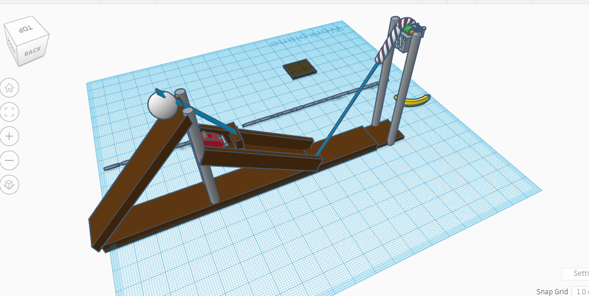
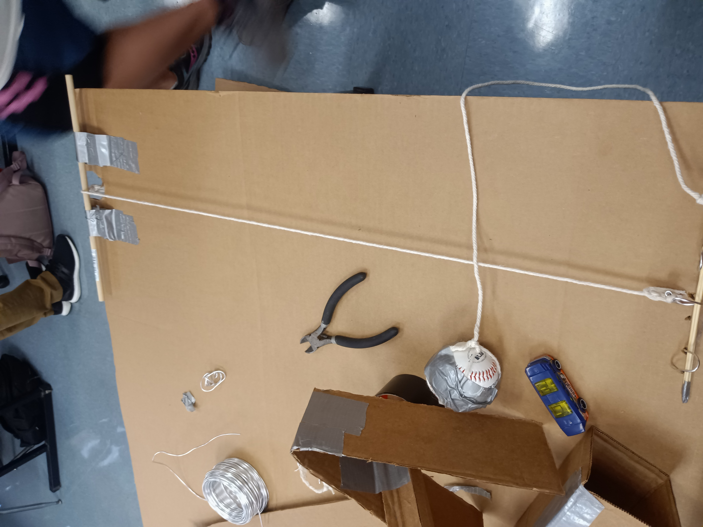
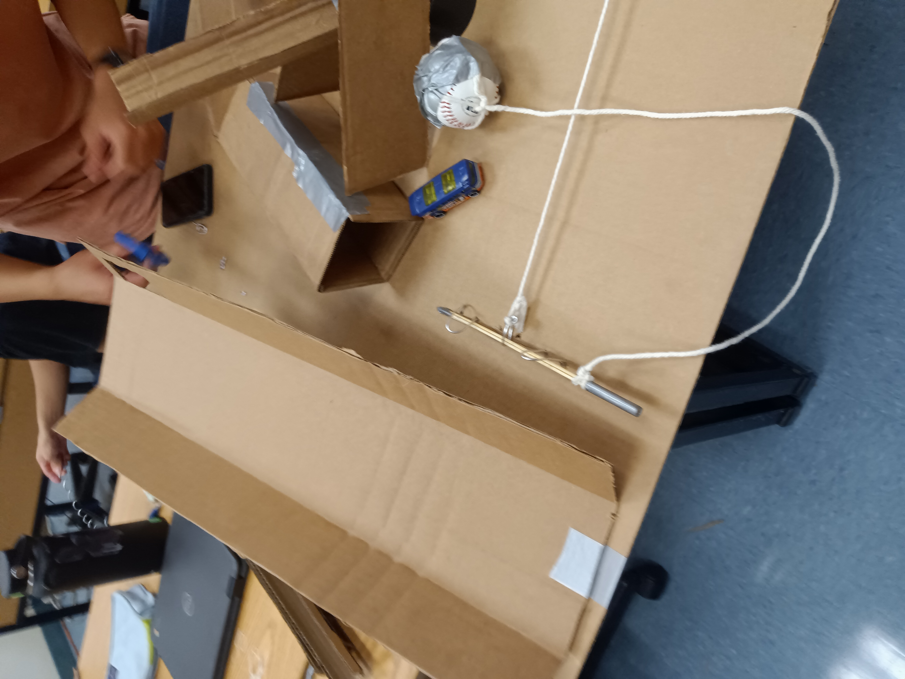
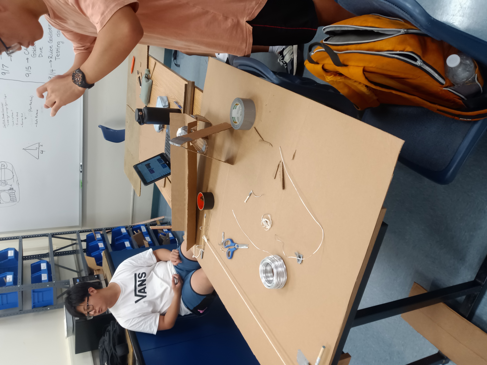
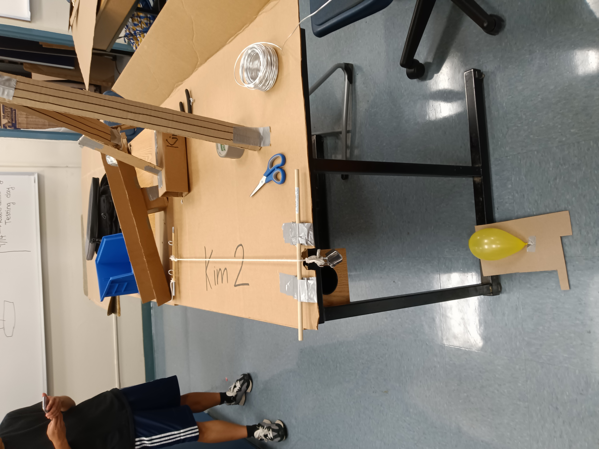

9//8 - second journal entry.
we began construction on the Tungsten Guilletine. The concept is sound. we will drop a 2/3 pound cubic inch of tungsten onto a small balloon. Hypothetically, this should be able to pop the thin rubber. The cube will be attached to a string hanging over a pulley. the other end of the string will have a ring attached, witch will be hooked onto something to anchor the cube. By knocking or pulling the anchoring pin or hook out of the ring, the cube is allowed to accelerate by its own gravity towards the balloon below.

9//13 - third journal entry.
The Guillotine has formed nicely. We had to redo many parts of its design. At first, we cadded a more historic version of a guillotine, but the tall structure created stability and cunstruction problems. Also, instead of a hook attached to a wheel and axle that would swing and release the string, we whent with an anchoring pin that would be yanked out by the attached baseball as it passes by. Also, the first 2/3rds of the project has been fleshed out. A small HotWheels car will roll down an inclined plane, setting a baseball into motion on a seperate inclined plane that runs parallel to the pin and perpendicular to the tungsten cubes harnessing string. The baseball has a string connecting it and the pin mooring the string that holds the cube from falling, and as it rolls down the ramp it will fling itself off the table, ripping the pin out with it.

9//8 - fourth journal entry.
It is complete. The guillotine has been tested and can pop a balloon easily. We encountered problems in early testing with the baseball and hotwheels car. The baseball had a small impediment to keep it from rolling down on its own. At times, this obstacle was inconsistant, and on occassion the hotwheels would not be able to set the ball a-rolling. To combat this, the hotwheels car's ramp was extended greatly, with the newer section placed at an even greater angle. This cleared all problems up. Repeated uses of the guillotine seems to break the cubes carriage over time, however, so after we finished the final test by popping the balloon (see video below), we stopped testing it.

9//27 Fifth Journal entry.
Our first real activity after the rube goldberg machine. We split into groups of two and dissected old desktop computers. The proccess involved first disconnecting many cables. Then, the careful removal of large modules like the power supply, disk reader, and the cover and fan for the heat sink. After removing the chaff, the motherboard was carefully pulled apart, with the heat sink and cpu being removed. After that, We put the computer back together and tried turning it. It did not. I do not believe this was our fault though, as the power button felt broken. All the other computers had a distinct resistance when pressing the button, and it would make a click when pressed far enough. The power button on our computer felt loose, and if that was the problem there was nothing we could do about it.
10//6 Sixth Journal entry. We did a small exercise this week. We were learning about applications of engineering on prosthetics and medical uses. To corroberate this, we split into groups of two and created cardboard prosthetics. The goal was to have our prosthetic be able to carry a water bottle. We decided to use the jeweling wire from the tungsten guillotine project as the skeleton of our prosthetic. It was effective in actually making the fingers curl up, but was too rigid and segmented enough to actually grip and hold the bottle. In the end, the fingers only served to force the bottle onto the thumb, which actually carried it. Still a win, though.
10//17 seventh journal entry.
This week marked the beginning of the bottle rocket project. Me and Joseph are partnered up. We plan on creating a rocket with tilted fins, so that the rocket spins in flight and becomes more stable. I also plan on adding a parachute onto the rocket using string and a plastic ralphs bag. We cadded the rocket on friday, and began building on wednesday. It is coming along nicely. I worry about our cap. It does not fit well, and the angle it lies at is very finicky.
10//20 eighth journal entry.
This friday we finished the bottle rocket project and test fired them. There were many problems. on our first launch, the cap fell off a bit, and the crooked angle messed up the launch. But our second launch went really well! However, I am annoyed with how the rockets were launched. I expected to fire them straight up, and I built the rocket with that in mind. Instead, we launched the rocket at a 45 degree angle. The parachute was worse than useless. Because we were more or less shooting sideways, the rocket never got high enough for it to matter. Also, the way it was supposed to deploy depended on the rocket slowing, and falling back dow, with drag releasing the parachute. WHen shooting sideways, this never happened. Instead, the parachute weighed down the front of the rocket, which would not have mattered if the rocket was flying straight up. This caused the rocket to curve faster than it should have, going into the ground. Despite this, the fins worked perfectly, and the rocket had a really nice spin to it. If I had just yanked out the parachut before launch, the rocket would have gone way further. Its frustrating.
Our First Launch.
Our second Launch.